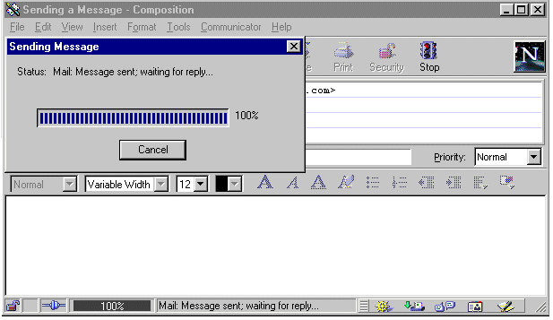
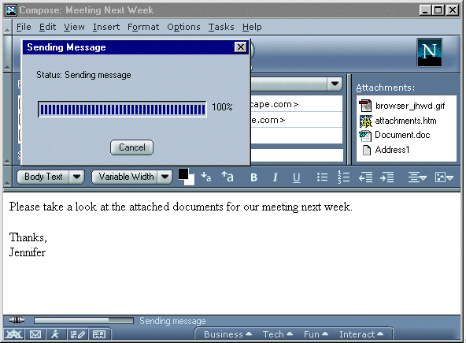
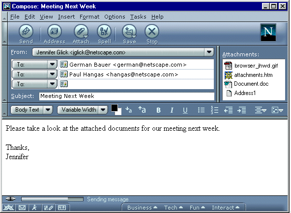
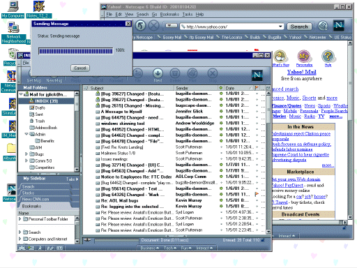

|
CodeName/Mozilla: Mail:
Compose
|
UI Design Ideas
|
|
Mail Compose: Sending
Feedback
|
Last
Modification:
|
|
Author: Jennifer Glick
Creation Date: 1-8-01
|
Status: Draft
|
Summary
Related Bugs:
- 28348 - No progress dialogue when sending mail. (Feedback when
a mail message is being sent.)
nsbeta1+.
- 52329 - Mail compose window disappears when sending mail.
(Feedback when a mail message is being sent.)
nsbeta1+.
- 61094 - No Confirmation of Successful Message Send
Displayed.
Currently, when the user composes a mail message and Sends the
message, the Mail Compose window disappears immediately. This was
originally done on purpose to give the perception of a fast mail
application. Some usability problems have been found with this
implementation.
- Users have expressed concerns of not getting adequate feedback
regarding whether the message has actually been sent. During
usability testing, a frequent comment from users is "Did it get
sent?". Many even go to their Sent folder for verification.
Some novice users requested the feature of a modal dialog that
pops up when a message is sent. ("Don't show this dialog
again".)
- The Compose window closes when sent, giving the appearance
that the action was successful. If the send operation then fails,
the Compose windows reappears and gives the user an error message.
Since the user already thought the message was sent, this is often
confusing behavior.
- There is no obvious way to cancel a send that is taking to
long.
4.x Behavior
When a message is sent using 4.x:
- The Mail Compose window remains open until the message is
really sent.
- Status of the message send operation appears in the Mail
Compose window status bar (visual and text).
- A Progress window appears on top of the Mail Compose window
indicating the status of the send operation (visual and text).
Note: this dialog may sometimes appear and disappear very quickly,
but even the quick appearance of this dialog is helpful feedback
to users.
- A Cancel button appears on the progress dialog. If a
message is taking a long time to send, the send operation can be
canceled.

Proposals
1. Implement the same (or similar) to 4.x.
- The Mail Compose window remains open until the message is
really sent.
- Status of the message send operation appears in the Mail
Compose window status bar (visual and text).
- A Progress window appears on top of the Mail Compose window
indicating the status of the send operation (visual and text).
Note: this dialog may sometimes appear and disappear very quickly,
but even the quick appearance of this dialog is helpful feedback
to users.
- A Cancel button appears on the progress dialog. If a
message is taking a long time to send, the send operation can be
canceled.
- Do we need a "Stop" button on Mail Compose?

2. Mail Compose window open and status bar information
- The Mail Compose window remains open until the message is
really sent.
- Status of the message send operation appears in the Mail
Compose window status bar (visual and text).
- Do we need a "Stop" button? Does the "Stop" button stop
the send operation? "Does it stop a large attachment from
being added?"

3. Mail Compose window closes immediately but Progress dialog
stays up
- The Mail Compose Window closes immediately when the user sends
the message.
- A Progress window appears on screen indicating the
status of the send operation (visual and text).
- A Cancel button appears on the progress dialog. If a
message is taking a long time to send, the send operation can be
canceled?
